틸론소프트 AI 서비스 소개
성장가속본부 · 이춘성 본부장
성장가속본부 · 이춘성 본부장
2021 ~ 2026 · VDI 조달 판매액 기준
지난 6년간 VDI 조달 판매액 중
틸론 제품이 차지하는 비중
| 공급기업 | 제품명 | 점유율 | 라이선스 |
|---|---|---|---|
| 틸론 | Dstation v9.0 | 83.13% | 22,603개 |
| 쓰리에스소프트 | NEPYX NetDesktop | 9.42% | 2,836개 |
| 이트론 | JDesktop Enterprise v7.0 | 5.52% | 1,491개 |
| 소만사 | VD-I v2.0 | 1.76% | 100개 |
| 엔컴퓨팅 | VERDE VDI 8.3 | 0.17% | 50개 |
| 그 외 3개사 | — | 0.00% | 0개 |
출처: 조달청 나라장터 집계 · 2026-10 기준 · 표 점유율은 원데이터(83.13%)
고객의 실제 업무를 지원하며 쌓아온,
현장에서만 얻을 수 있는 83.2%의 독점적 경험
공공기관 업무환경을 구축·운영하면서 현장의 다양한 목소리 수집
01
사용자가 어디에서
불편을 느끼는지
02
어떤 환경에서
성능과 안정성이 중요한지
03
보안과 편의성을
어떻게 함께 제공해야 하는지
축적된 좋은 기술을 서비스로 오픈하면 더 많은 혜택이 주어질 것
시장이 선택한 기술을, 더 많은 사람이 사용할 수 있도록 하는 것.
구축으로 증명한 기술을, 서비스로 개방하는 것.
오늘 발표의 출발점
10.15 · Tesla Roadster 시연
자동차가 떠오른 사실보다, 그 가능성을 만든 기술이 어디에서 왔는가
혁신은 새로운 기술을 만드는 데서만 나오지 않습니다.
오래 축적한 기술을 새로운 방식으로 연결하는 것으로
더 큰 혁신이 시작됩니다.
25년, 바닥부터 탄탄하게 다져온 기술
가상화
클라우드
GPU Partitioning
보안관제
틸론소프트의 그동안 축적해온 기술을 서로 결합하여
그 기술을 고객에게 전달하는 방식을 넓히는 것입니다.
구축형이 아닌, 서비스형으로
검증된 기술을, 더 많은 고객에게 서비스로
구축형 사업 · 유지
납품은 한 번
서버를 사고 시스템을 구축해 납품합니다.
기존 사업은 그대로 이어갑니다.
서비스형 사업 · 확장
서비스는 매일
고객이 선택할 수 있는 방식을 넓힙니다.
서비스는 고객에게 매일 증명해야 합니다.
납품은 한 번이지만,
서비스는 고객에게 매일 증명하는 것
틸론소프트는 기술을 제공하는 데서 그치지 않고,
고객이 그 기술을 계속 잘 사용할 수 있도록 하는
책임까지 가져가겠습니다.
그 약속을 담은 세 가지 서비스
TheOther.Space 2.0
일할 환경의 클라우드
TheOther.Town
AI 활용 · 개발 환경
Kstory.ai
창작 경험
일을 시작하기 전에, 업무환경부터 준비해야 합니다.
장비를 마련하고 · 프로그램을 설치하고 · 관리와 보안을 고민해야
교수님들은 대학교에서 AI를 가르치기 전에, 실습환경부터 갖춰야 합니다.
GPU 컴퓨팅 자원과 개발환경 준비에 오랜 시간 · 비용이라는 높은 문턱
여러 상용 LLM을 마음껏 사용하기에는 토큰 비용이 부담스럽습니다.
누가 · 어떤 모델을 · 얼마나 쓰는지, 전체 비용은 얼마인지부터 걱정
AI를 처음 만나는 분들에게는 써볼 계기 자체가 필요합니다.
AI가 좋다는 이야기는 많이 들었지만, 무엇부터 해봐야 할지 모르는 분들
AI와 함께 내 이야기를 책으로 만드는 친근한 경험에서 AI사용의 출발점
이 시작의 문턱을,
틸론소프트는 서비스로 낮추고자 합니다.
TheOther.Space 2.0
일할 환경의 문턱을 낮춥니다.
장비와 장소의 제약을 줄이고
필요한 업무환경을 클라우드로 제공합니다.
일하고
TheOther.Town
AI 활용의 문턱을 낮춥니다.
iStation으로 AI 모델과 비용을 관리하고,
Tstation으로 GPU와 개발·실습환경을 연결합니다.
배우고
Kstory.ai
창작의 문턱을 낮춥니다.
내 이야기를 만드는 과정에서
누구나 AI를 직접 경험하도록 합니다.
만드는
더 많은 사람의 시작을 어떻게 앞당길 것인가.
서비스 01
기존 DaaS 서비스에 최신 Dstation Xtack 엔진을 더한 클라우드 데스크톱 서비스
필요한 업무용 컴퓨터 환경을, 클라우드에서 이용합니다.
한 기업이 새로운 프로젝트를 시작한다면
시작
참여자 확정
준비 — 가장 긴 구간
PC 마련 · 프로그램 설치 · 사용자별 설정 · 보안정책 적용
종료 후
장비 · 계정 · 업무자료 관리
우리가 바꾸고 싶은 것은,
바로 이 준비와 관리의 과정입니다.
사용자
허용된 업무환경에 접속해 일합니다
장소와 장비의 제약이 줄어듭니다.
관리자
여러 사람의 환경을 중앙에서 관리합니다
조직에는 일관되게 관리할 수 있는 환경이 생깁니다.
결국 중요한 것은 PC의 위치가 아닙니다.
필요한 사람이 필요한 업무를
얼마나 편리하게 시작할 수 있는지가 중요합니다.
PC를 준비하는 시간을
업무로 돌려드리겠습니다.
TheOther.Space 2.0이 제공하려는 가치는 바로 여기에 있습니다
서비스 02
두 가지 AI 서비스가 함께 제공됩니다.
iStation
AI를 활용하고 관리하는
여러 AI 모델 선택 · 토큰 사용량 관리 · 보안을 강화한 내부문서 활용
Tstation
AI를 개발하고 실습하는
GPU 자원 · 독립된 개발공간 · Jupyter와 VS Code 개발도구
iStation
여러 AI 모델을 선택해 활용하면서
사용자와 조직의 토큰 사용량을
함께 관리할 수 있습니다.
모델 선택
사용자별 토큰 사용량 · 이번 달
조직 전체 사용량 / 월 예산
62%
4.84M / 7.8M 토큰
예산 내
토큰 관리는 AI 사용을 제한하기 위한 기능이 아닙니다.
이용 현황을 파악해 필요한 곳에 예산을 배분하고, 조직이 AI를 지속적으로 활용할 수 있도록 돕는 기능
iStation · 보안을 강화하면서 내부문서를 활용
올해 연봉 조정 기준 알려줘
2026 보수규정을 기준으로 직급별 조정 기준과 성과 반영 방식을 정리해 드립니다.
출처 · 2026 보수규정.pdf올해 연봉 조정 기준 알려줘
이 질문에 필요한 문서에 접근 권한이 없습니다.
인사팀 담당자에게 문의해 주세요.
사용자는 자신에게 허용된 정보를 활용하고, 조직은 접근권한과 활용 범위를 통제합니다.
AI의 비용과 관리를 고민하는 시간을,
AI로 성과를 만드는 시간으로 바꾸는 것.
TheOther.Town iStation이 제공하려는 가치는 바로 여기에 있습니다
TheOther.Town
iStation
AI를 활용하고 관리하는 환경
Tstation
AI를 직접 개발하고 실습하는 환경
학생 · 연구자 · 개발자에게
GPU 자원
실습과 연구에 필요한 컴퓨팅 자원
독립된 개발공간
사용자마다 분리된 환경
Jupyter · VS Code
익숙한 개발도구 그대로
장비와 개발환경을 하나씩 준비하는 대신,
자신의 과제와 연구, 개발에 집중하도록 돕습니다.
교수
환경을 구성하는 일보다,
수업에 집중합니다.
학생
설치 문제를 해결하는 일보다, 실습에 집중하고,
개발자
준비보다 아이디어를 구현하는 데 시간을 씁니다.
GPU와 개발환경을 준비하는 시간을,
AI를 배우고 만드는 시간으로 돌려드리는 것.
TheOther.Town Tstation이 제공하려는 가치는 바로 여기에 있습니다
일하고 · 활용하고 · 개발하는 환경을 말씀드렸습니다.
AI를 처음 만나는 사람에게는
어떤 경험을 제공할 수 있을까요?
사람들은 왜 AI를 시작하기 어려워하는지, 왜 책을 펼치지 못하는지.
책에 관심이 없는 아이
글자가 어렵거나
언어가 달라 참여하지 못하는 아이
무엇부터 해야 할지 막막해서
AI를 써보지 못한 어른
책의 첫 장을 펼칠 이유가 생기고, '다른 작가들은 어떻게 썼을까'라는 호기심이 관련 독서로 이어집니다.
① 내 이야기 만들기
나만의 재료로 시작
② AI 동화책으로 완성
책의 첫 장을
펼칠 이유
내 이야기가 활자와 삽화로 완성되는 경험 · 창작의 성취감
③ 다른 책으로
"다른 작가는
어떻게 썼을까?"
호기심 → 관련 독서
참여 소재
일상 → 은유 → 이야기 → 한 권의 책
프로그램 장면
일상에 지친 직장인들이 자신의 반려견·꿈·고민을
동화의 은유로 풀어내며, 하루를 정리하는 시간을 갖습니다.
마음을 정리하는 시간이 됩니다.
부모가 아이와 함께 자녀의 말과 그림을 고르고, AI로 다듬어 한 권의 가족 그림책을 완성합니다.
가족 그림책의 재료
= 세상에 하나뿐인 가족 그림책
어르신들의 말씀을 AI가 따뜻한 그림동화로 정리해 드립니다.
어르신의 구술 · 자판이 아니라 목소리로
"내가 살아온 이야기를 책으로 쓰면 수십 권이지."
디지털 격차 해소
디지털을 처음 경험하는 기회
기억을 되살리는 인지 활동
살아온 이야기를 되짚는 시간
세대 간 소통
어르신의 이야기가 손주의 그림책으로
책을 대신하는 AI가 아니라,
책을 펼치게 하는 AI.
Kstory.ai가 동화책에서 출발한 이유입니다
도서관
가족의 이야기를 함께 만드는
독서 프로그램으로
학교
이야기를 읽고 수정하고
발표하는 수업으로
평생교육기관
자신의 삶을 기록하는
활동으로
한 번 신기해서 써보는 AI가 아니라,
읽고 배우고 표현하는 활동으로 이어가려는 것입니다.
오늘 소개한 모습이 이 서비스들의 마지막 모습은 아닙니다
TheOther.Space는 사람의 업무공간을 넘어,
AI 에이전트가 24시간 안전하게 일할 공간으로
발전시키고자 합니다.
독립된 환경과 권한
에이전트마다 분리된 공간과 권한을 둡니다
작업기록을 남기며
무엇을 했는지 추적할 수 있습니다
중요한 일은 사람이 승인
결정의 마지막은 사람에게 둡니다
AI에게 일을 맡겨도, 통제는 놓치지 않겠다는 방향입니다.
TheOther.Town은 AI 실습에서
개발과 운영의 전 과정으로 넓혀가겠습니다.
iStation과 Tstation을 연결해, 개발과 테스트, 배포까지 지원하는 플랫폼을 지향합니다.
Kstory.ai는 동화책에서 시작하지만,
동화책에 머물지 않겠습니다.
자신의 경험과 생각을 표현하는 영역을 넓혀가겠습니다.
틸론소프트는 기술을 잘 만드는 것에서 멈추지 않겠습니다.
더 많은 사람이 사용하는 서비스로 완성하겠습니다.
모습은 달라도 방향은 같습니다 — 더 많은 사람이 자신이 하고 싶은 일을 시작하게 하는 것
틸론소프트는 제주에 있는 회사입니다
제주에는 모든 시작에
바다가 하나 더 놓여 있습니다.
장비 하나를 들이려면
바다를 건너와야 합니다
좋은 사람을 뽑으려면
바다를 건너오라고
설득해야 합니다
택배를 시키면
추가 요금이 붙습니다
오늘 말씀드린 '시작의 문턱'이,
이 제주에서는 누구보다 높았습니다.
클라우드와 AI에는 바다가 없습니다
문턱이 가장 높은 곳에서 낮출 수 있다면,
어디에서든 낮출 수 있다.
제주는 틸론소프트가 3가지 서비스를 가장 먼저, 가장 엄격하게 증명해야 하는 곳입니다.
그 첫 증명을, 제주에서 하겠습니다.
다만, 이 증명은 틸론소프트 혼자 할 수 없습니다
대학
TheOther.Town으로
다음 학기 AI 수업을 열어 주실
도서관 · 학교
아이들이 제주 바다가 나오는
첫 동화책을 만들게 해 주실
제주의 기업
TheOther.Space로
업무를 시작할
파트너
제주에서 증명된 것을
바다 건너로 가져가 주실
지역의 기업이 실제로 사용하고,
지역의 학생이 배우고,
지역의 주민이 자신의 삶에 활용
지난 6년 동안
틸론소프트를 선택해 주신 기관의 비중이었습니다.
앞으로 이 숫자가,
틸론소프트의 서비스로 제주에도
일을 시작하고, 수업을 시작하고,
첫 책을 펼친 제주도민의 비중이기를
희망합니다.
더 많은 제주도민의 일과 수업과 AI활용의 시작을
어떻게 앞당길 것인가.
이 질문의 답을, 제주에서 여러분과 함께 만들어 가겠습니다.
첫 문턱을 제주에서,
여러분과 함께 낮추겠습니다.
증명된 기술을,
제주도민 모두가 누리는 서비스로.
TheOtherDay 2026 · 틸론소프트가 시작하는 다음 걸음
감사합니다

↑ ↓ ← → 이동 · Enter 선택 · 클릭으로 바로 이동
하단 진행 바 클릭으로도 이동할 수 있습니다
THEOTHERDAY 2026